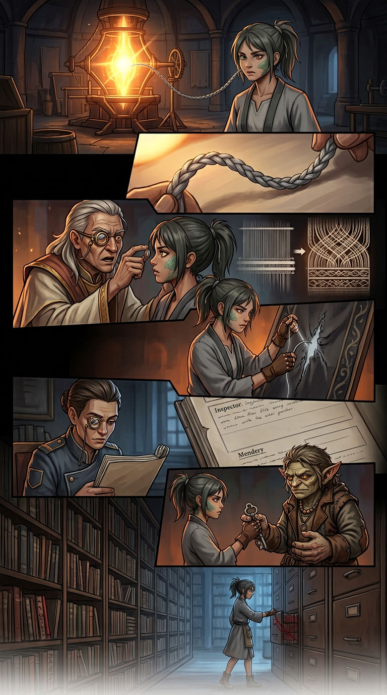
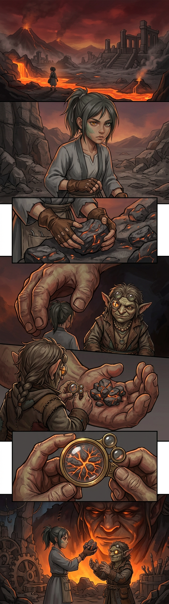
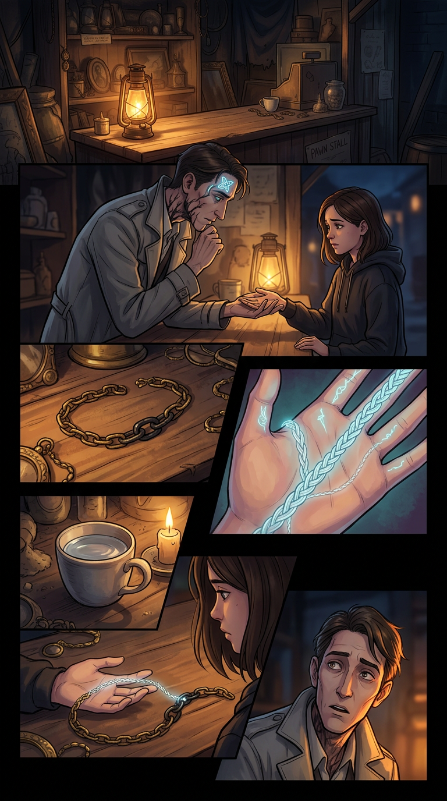
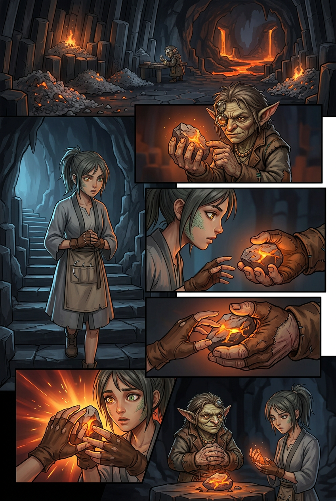
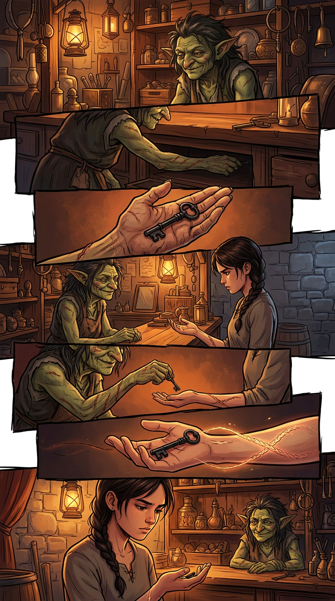
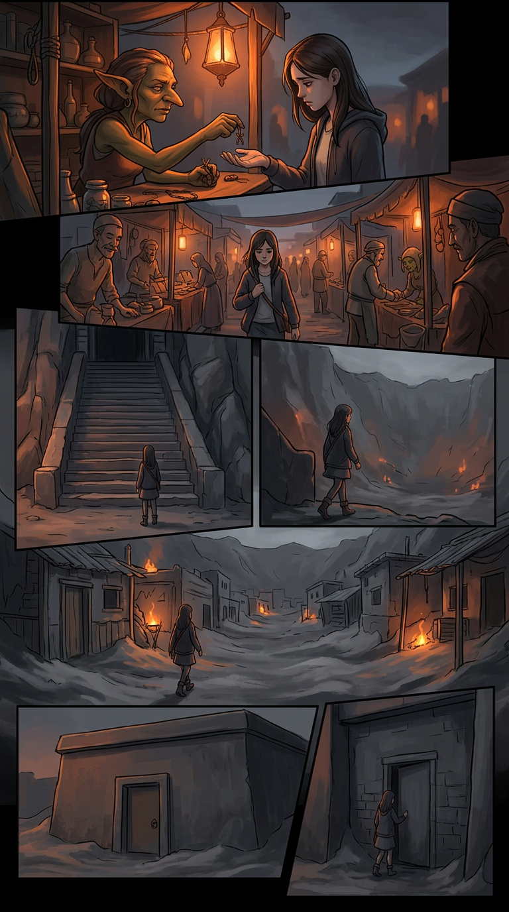
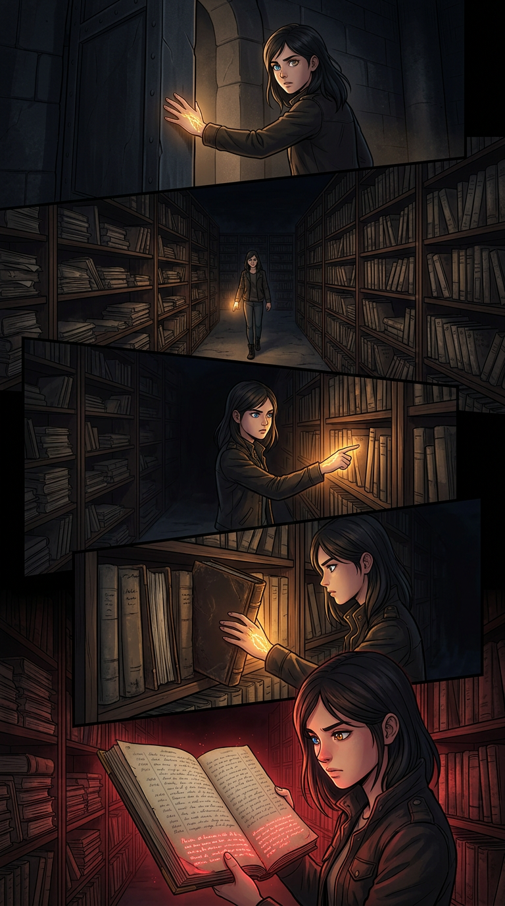

Chapter 005 — The First Pull
Arc I — The Unspooling · Agnikhand · 10 pages · complete · English + Hindi. Pick a page, or read straight through.

001
002
003
004 005
005 006
006 007
007
008
009
010Chapter 005 — The First Pull / पहला खिंचाव — CLOSE-OUT
Status: COMPLETE — 10 pages (001–010), EN + Hindi scripts, 10 page images, cast files, glossary + locations grown in-step. Arc: I — The Unspooling · Sector: Agnikhand · Open PR for this work: Kyabtao/Manga#3 Chain-stop budget: spent in Ch. 003.
Canon rules added in Chapter 5 (binding forward)
- The mark opens: not violently, not dramatically — a bloom, a fifteen-year exhale. The braid unfurls. Thread emerges: ash-grey (Ira's) and shadowless (the sewer's), braided. The first thread Ira Sutar has ever produced.
- The blank strand carries no Sector, no Kind, no debt. It is older than the current Loom-turn. Thread that owes nothing — like the girl who carries it.
- The thread is present, not pulling: Ira does not pull thread from the Loom. The thread is there, given, not borrowed. The Loom's first law does not apply.
- The Spindle brightens for the second time in four centuries: the silent second was the first; the mark's opening is the second. The basin notices.
- The Inspector recognizes the braided mark: "Like the Mendery records." The Office escalates from clerks to inspectors.
- Ira submits to measurement: Kind (Manavkin), Thread (braided), Strain (high), Debt (zero). The first official grey-ink record of her thread.
- The Mendery connection: the posting order references a Mendery file. The census was transferred because of a Mendery record. Ira's mother was bound there.
- Kessa's key: a Kshudra-made key to the Mendery's back door, given by Ira's mother fifteen years ago. Kessa has been waiting for the girl to ask.
- The Mendery archive: not a workhouse but a record-room. Hundreds of files. Ira's mother's file carries a crimson line: "Sewn shut." And a second crimson line, added later: "The braid will open. The thread will pull. The girl will come."
- The principal predicted her: the crimson paperwork in the Mendery file was written before Ira was sewn shut. The principal knew she would come.
- The Loom never speaks. The Spindle holds its brightness. Ash falls as always.
Open threads (carry to Chapter 6+)
| Thread | Pages | Payoff |
|---|---|---|
| The Mendery archive | 009–010 | Ch. 006+: Ira explores the files |
| The principal's prediction | 010 | Long-arc: who is the principal? |
| The mother's file | 010 | Ch. 006+: the mother's history |
| The blank strand | 001–010 | Long-arc: what is the sewer's origin? |
| The Inspector | 005–006 | Ch. 006+: Office escalation |
| Kessa's key | 008 | The key opens more than one door |
| The Spindle's second brightening | 001 | Long-arc: the Loom's attention |